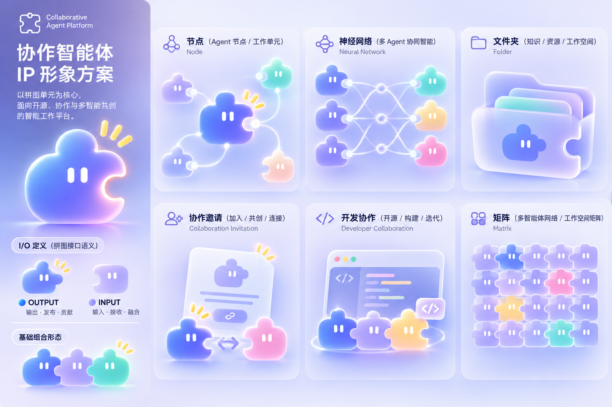
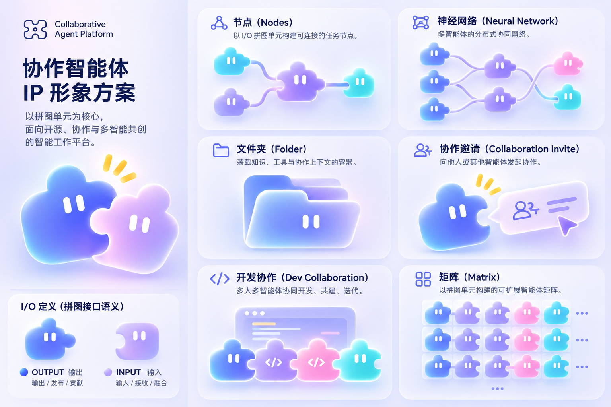
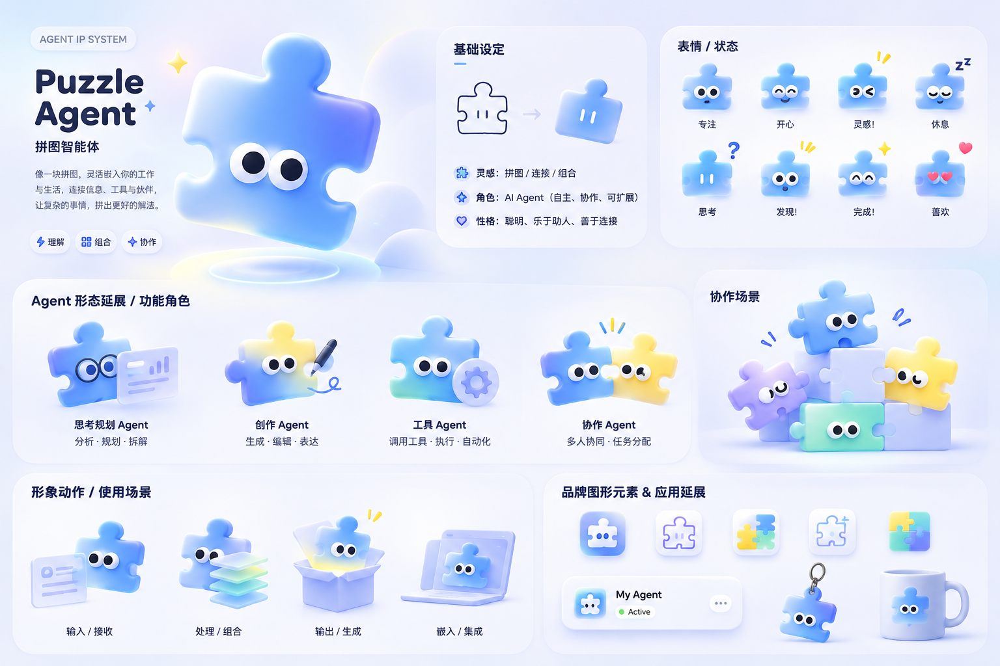
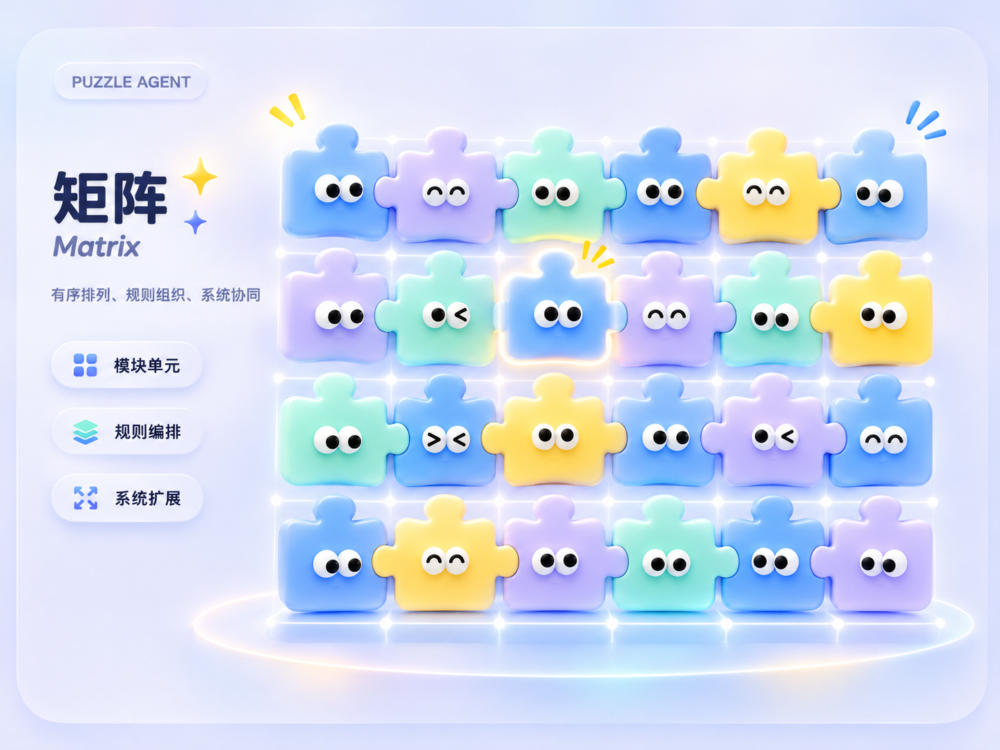
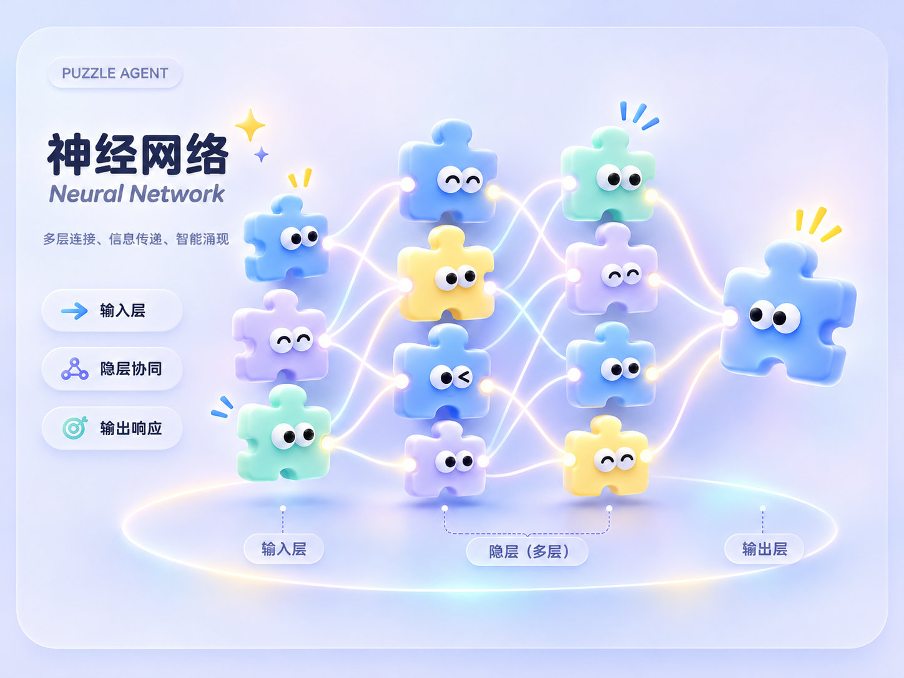
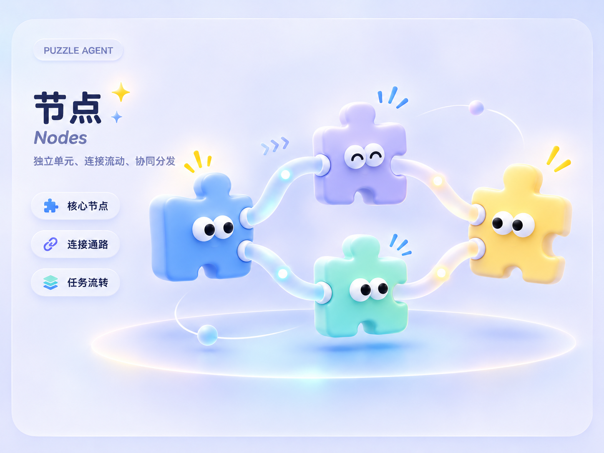

IP设计 IP
拼图单元是协作智能体的视觉核心。下面两套方案只作为形象参考，还没有收进组件库。
施工中
动画资产与动作库仍在制作中。本页只收录静态参考，不包含可播放的动作、表情循环或动效编排。
方案 1
协作智能体 IP 形象方案。以拼图单元连接节点、神经网络、文件夹、协作邀请、开发协作和矩阵。


方案 2
Puzzle Agent。在方案 1 的拼图语言上，补了表情、功能角色、使用场景和品牌延展。



